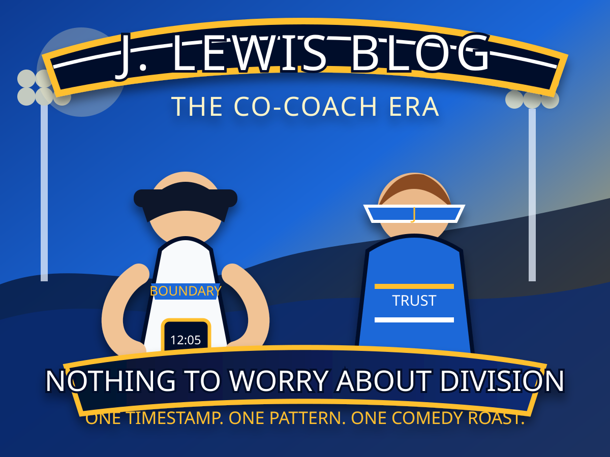

August–September 2025
Pre-marriage communication
Casual messages, social-media shares, project discussion, sports talk, and familiar language.
Nine months into marriage, and I’m still waiting to become the only priority.
Funny how certain times of year seem to bring back more than just memories.
Apparently the beginning of July is one of those seasons—where old chapters, familiar conversations, and unfinished goodbyes somehow find their way back into harbor.
The hardest part isn’t that history exists.
It’s watching history keep getting another chance while your marriage keeps waiting for its turn to come first.
Another promise. Another reset. Another explanation. Another assurance that “this time is different.”
Then the clock starts over. Again.
The graphics are brought forward as full-size visual exhibits instead of being buried in links.



The separate green-dress cruise photo is not yet stored as a repository asset, so this version uses the existing cruise/coaches visual already embedded in assets/ingleside-coaches.svg.
Each animated point represents a reported quiet period followed by renewed communication.
Casual messages, social-media shares, project discussion, sports talk, and familiar language.
Prior-history communication became a recurring marital boundary issue.
Reported Kevin-related contact activity occurred around New Year’s.
The marriage-first boundary was communicated directly.
Reported Messenger exchange regarding a job opening.
Approximately 35 days between reported contact markers.
Jesica later stated that she spoke with Kevin around this date.
A screenshot shows a Facebook share link in the Messenger thread.